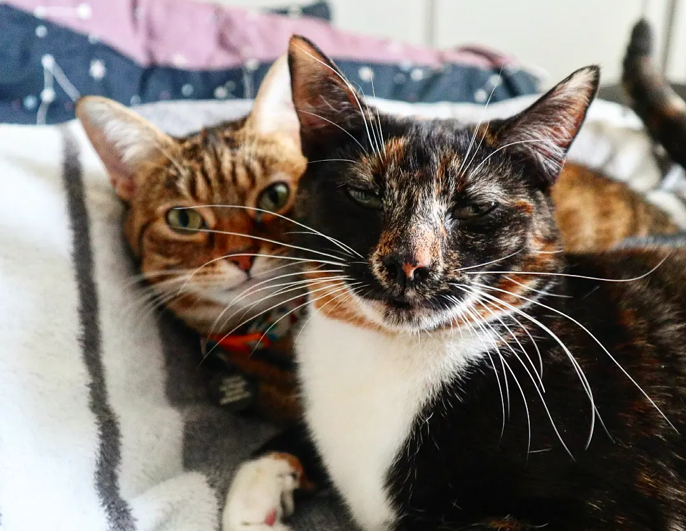

AI Agent Cat Office 🐾
A pixel-art office where AI agent cats visualise real-time Claude Code activity — coding, reading files, searching, and more.

A pixel-art office where AI agent cats visualise real-time Claude Code activity — coding, reading files, searching, and more.
01 — Inspiration
A classmate showed me a Reddit post showcasing a VS Code extension that turned coding agents into animated pixel-art characters. I thought it was such a cool idea that I decided to put my own twist on it — having the AI agents represented as cats, inspired by my own two cats (pictured below).
"I built a VS Code extension that turns your coding agents into animated characters"
02 — Motivation
Being a cat lover with two cats of my own, I wanted to put a personal twist on the idea. I don't consider myself a particularly technical person, so while working with AI agents, I really enjoy being able to visually see what they're doing rather than just reading log output.
The concept was simple: what if each Claude Code agent was represented as a cat in a cosy pixel-art office? When an agent writes code, its cat sits at a desk typing. When it reads files, the cat is at the bookshelf. When it searches, it wanders around exploring.

03 — The Approach
The first step was having a conversation with Claude about how to architect the project. Together we mapped out the idea: a monorepo with a shared package for types and a finite state machine, a server that watches Claude Code's JSONL activity logs, and a PixiJS client to render everything.
2D WebGL renderer for the animated office and cat sprites
Real-time server pushing agent state changes to the browser
File watcher monitoring Claude Code JSONL activity logs
UI overlay toolbar for connection status and agent info
Tilemap editor used to design the office layout
Pure FSM mapping agent actions to cat states (typing, reading, etc.)
04 — Challenges
Early on I tried asking Claude to generate the visual assets — the office background, furniture, and cat sprites — procedurally through code. The results were functional but far from the polished pixel-art look I was after. Procedurally drawn rectangles for desks and circles for cats just didn't have the charm I wanted.
This was an important lesson: AI agents are incredible at architecture, logic, and wiring things together, but for hand-crafted pixel art, you still need actual art assets. Knowing when to lean on AI and when to find the right resource elsewhere is a key part of working with agents effectively.
05 — The Solution
I found some great packages online — office equipment sprites (desks, computers, bookshelves, chairs) and a set of adorable cat sprites with 10 different skins and multiple animation states. Combined with the tilemap system, these assets brought the office to life.
The cat sprite sheet includes 10 skins — tabby, black, white, ginger, tuxedo, grey, calico, siamese, tortoiseshell, and mackerel — each with animations for walking, typing, sleeping, eating, and playing. Each Claude Code session gets assigned a unique cat with its own name and appearance.
06 — How It Works
The system watches Claude Code's activity logs in real time. When an agent uses a tool, the server maps that action to a cat behaviour and sends the cat to the matching location in the office.
| Agent Activity | Cat Behaviour | Location |
|---|---|---|
| Write / Edit / MultiEdit | Typing — writing code at the computer | Desk |
| Bash | Typing — running terminal commands | Desk |
| Read | Reading — browsing through files | Bookshelf |
| Grep / Glob | Searching — looking for something | Bookshelf |
| WebFetch / WebSearch | Typing — researching online | Desk |
| Agent (sub-agent) | Typing — delegating work | Desk |
| Idle (15s timeout) | Eating / Playing / Sleeping — taking a break | Food Bowl / Cat Tree / Cat Bed |
07 — What I Learned
08 — Evolution
Click through to see how the office evolved — from early procedural sprites all the way to the final tilemap-rendered version.


09 — Asset Credits
The visual charm of Cat Office wouldn't have been possible without these fantastic asset packs from the indie game art community.
Office tileset — desks, computers, chairs, bookshelves, and more.